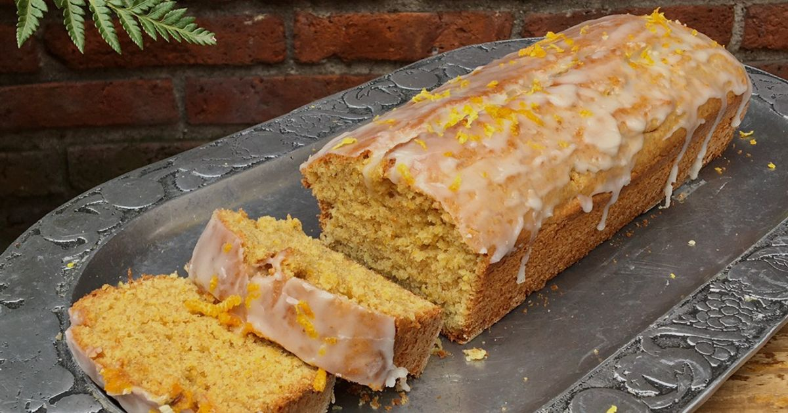
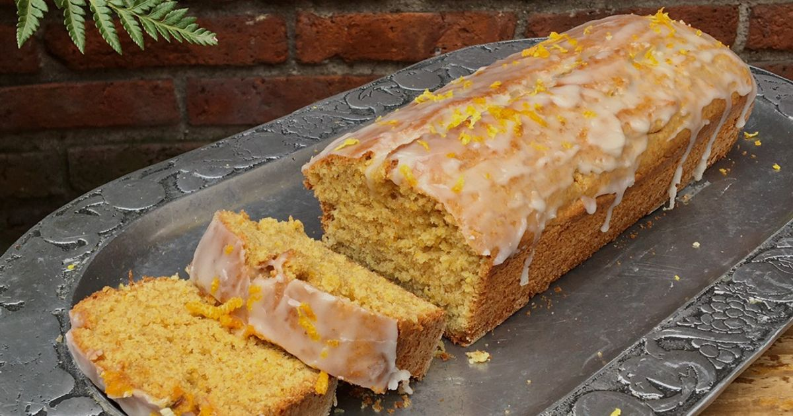

En Comida Consciente creemos que lo natural no necesita artificios. Desde la selección de los granos hasta el horneado final, todo se hace con respeto y dedicación. Molimos nuestras propias harinas en molino de piedra, conservando su esencia, y elaboramos cada producto a mano, sin químicos ni conservantes. Nuestro objetivo es simple: ofrecer alimentos reales, nutritivos y llenos de sabor, elaborados con conciencia y amor por lo que hacemos.
Elegimos granos y cereales de productores locales, asegurando frescura y calidad.

Molimos la harina en molino de piedra para conservar su fibra, aroma y nutrientes.
Amasamos a mano y horneamos sin químicos, priorizando nutrición y sabor real.

Usamos envases reciclables y biodegradables para reducir nuestro impacto ambiental.

Creamos alimentos reales, nutritivos y pensados para cuidar tu salud.